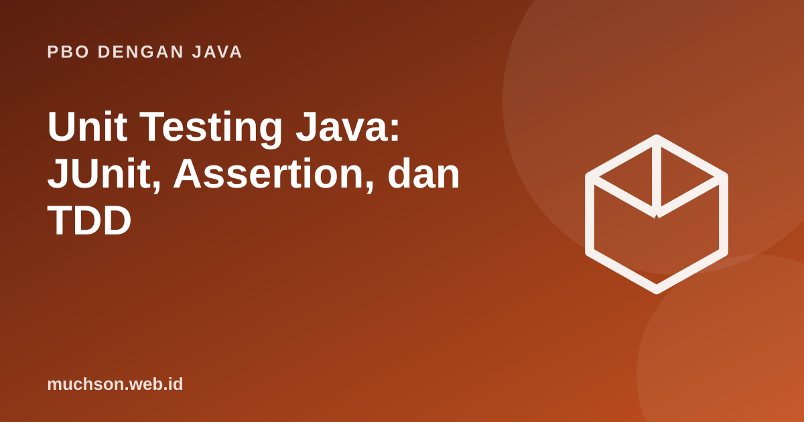

Beranda › Artikel › PBO dengan Java
PBO dengan JavaUnit Testing Java: JUnit, Assertion, dan TDD
Tes otomatis adalah jaring pengaman yang membuat Anda berani mengubah kode. Di Java, JUnit adalah standar de facto. Materi ini menunjukkan cara menulis tes yang jelas dan andal, serta bagaimana desain yang baik (interface, injeksi dependensi) membuat tes mudah ditulis.
Sebaiknya sudah paham: class dan method, exception, interface

Setelah membaca dan mencoba materi ini, Anda mampu:
- menulis tes JUnit 5 dengan @Test dan assertion
- menguji kasus batas dan exception
- memakai parameterized test
- menggunakan test double sederhana tanpa pustaka
- menerapkan siklus TDD: red, green, refactor
Anatomi sebuah tes
Pola yang mudah dibaca: Arrange–Act–Assert. Siapkan data, jalankan perilaku yang diuji, lalu periksa hasilnya. Nama tes harus menjelaskan skenario.
import org.junit.jupiter.api.Test;
import static org.junit.jupiter.api.Assertions.*;
class KalkulatorDiskonTest {
@Test
void diskonMemberSepuluhPersen() {
// Arrange
KalkulatorDiskon k = new KalkulatorDiskon();
// Act
double hasil = k.hitung(200_000, true);
// Assert
assertEquals(180_000, hasil, 0.001);
}
@Test
void hargaNegatifDitolak() {
KalkulatorDiskon k = new KalkulatorDiskon();
assertThrows(IllegalArgumentException.class, () -> k.hitung(-1, false));
}
}Mencoba prinsipnya tanpa pustaka
Inti JUnit sederhana: jalankan sekumpulan fungsi, tangkap kegagalan, dan laporkan. Kita buat versi mini untuk memahami apa yang terjadi di balik layar.
import java.util.*;
class KalkulatorDiskon {
double hitung(double harga, boolean member) {
if (harga < 0) throw new IllegalArgumentException("harga negatif");
return member ? harga * 0.9 : harga;
}
}
public class Main {
static int lulus = 0, gagal = 0;
static void tes(String nama, Runnable isi) {
try { isi.run(); lulus++; System.out.println("LULUS " + nama); }
catch (AssertionError e) { gagal++; System.out.println("GAGAL " + nama + " -> " + e.getMessage()); }
}
static void sama(double harapan, double aktual) {
if (Math.abs(harapan - aktual) > 1e-9) throw new AssertionError("diharapkan " + harapan + " tetapi " + aktual);
}
static void melempar(Class<? extends Throwable> jenis, Runnable r) {
try { r.run(); }
catch (Throwable t) { if (jenis.isInstance(t)) return; throw new AssertionError("jenis salah: " + t); }
throw new AssertionError("tidak ada exception");
}
public static void main(String[] args) {
KalkulatorDiskon k = new KalkulatorDiskon();
tes("member mendapat 10 persen", () -> sama(180_000, k.hitung(200_000, true)));
tes("non-member tanpa diskon", () -> sama(200_000, k.hitung(200_000, false)));
tes("harga nol", () -> sama(0, k.hitung(0, true)));
tes("harga negatif ditolak", () -> melempar(IllegalArgumentException.class, () -> k.hitung(-1, false)));
tes("tes yang sengaja salah", () -> sama(100, k.hitung(200_000, true)));
System.out.println(lulus + " lulus, " + gagal + " gagal");
}
}LULUS member mendapat 10 persen
LULUS non-member tanpa diskon
LULUS harga nol
LULUS harga negatif ditolak
GAGAL tes yang sengaja salah -> diharapkan 100.0 tetapi 180000.0
4 lulus, 1 gagal
Menguji banyak data: parameterized test
import org.junit.jupiter.params.ParameterizedTest;
import org.junit.jupiter.params.provider.CsvSource;
import static org.junit.jupiter.api.Assertions.assertEquals;
class GradeTest {
@ParameterizedTest
@CsvSource({ "100,A", "85,A", "84,B", "70,B", "69,C", "55,C", "54,D", "0,D" }) // termasuk nilai batas
void petakanNilaiKeGrade(int nilai, String grade) {
assertEquals(grade, Grade.dari(nilai));
}
}Test double: mengganti dependensi
interface Jam { int jam(); }
class JamSistem implements Jam { public int jam() { return java.time.LocalTime.now().getHour(); } }
class JamTetap implements Jam { // test double: nilainya kita kendalikan
private final int j;
JamTetap(int j) { this.j = j; }
public int jam() { return j; }
}
class Sapaan {
private final Jam jam;
Sapaan(Jam jam) { this.jam = jam; }
String sapa() {
int h = jam.jam();
if (h < 11) return "Selamat pagi";
if (h < 15) return "Selamat siang";
if (h < 18) return "Selamat sore";
return "Selamat malam";
}
}
public class Main {
public static void main(String[] args) {
for (int h : new int[]{7, 12, 16, 21})
System.out.println(h + ":00 -> " + new Sapaan(new JamTetap(h)).sapa()); // deterministik, tak bergantung waktu sungguhan
}
}7:00 -> Selamat pagi
12:00 -> Selamat siang
16:00 -> Selamat sore
21:00 -> Selamat malam
TDD: red, green, refactor
Tes yang baik: cepat, mandiri, berulang, dan jelas. Satu tes memeriksa satu perilaku; tes tidak bergantung pada urutan eksekusi, jaringan, waktu sistem, atau basis data produksi. Tes yang sering gagal tanpa alasan akan diabaikan, dan itu lebih buruk daripada tidak ada tes.
1. Tulis tes untuk method yang menentukan apakah tahun kabisat, termasuk 1900, 2000, 2024.
2. Mengapa tes yang bergantung pada LocalDate.now() rapuh?
3. Apa beda assertEquals(expected, actual) dan assertSame?
4. Apa itu cakupan kode (code coverage) dan apakah 100 persen berarti bebas bug?
- JUnit: @Test, assertion, assertThrows, parameterized test.
- Pola AAA dan nama tes yang deskriptif.
- Uji nilai batas dan kasus gagal.
- Test double dan injeksi dependensi membuat tes deterministik.
- TDD: red, green, refactor.
Tanya jawab
Bagaimana menambahkan JUnit ke proyek?
Apa bedanya mock, stub, dan fake?
Seberapa banyak tes yang cukup?
Referensi
- JUnit 5 User Guide
- Kent Beck, Test-Driven Development: By Example (Addison-Wesley, 2002)
- Martin Fowler: Mocks Aren't Stubs
- Joshua Bloch, Effective Java (edisi ke-3, Addison-Wesley, 2018)